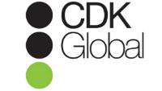

IPsoft Inc. | PaaS Manager
June 2015 - Present
- Lead and coordinate a global team of engineers focused on collaborating with management in the NY office on implementing organizational structure to increase efficiency (tier system/career pathing, monthly knowledge sharing sessions, redundancy coverage plans for critical clients).
- Responsible for keeping production environments up and running while monitoring Nagios alerts and coordinating with the various application and client teams (DBAs, Technical Execs, Networking, Application, multiple service teams).
- Troubleshooting platform issues which includes the ability to understand and use the following technologies (Java, RPM, Puppet, Bash, SSH, Message queues (Active MQ), Cassandra, Apache, Tomcat, MySQL, networking, OpenVPN, AWS).
- Architected automated smoke tests via Ruby Selenium Web driver and XSLT transformation to generate HTML run reports. Also set up the Git repo and wrote documentation on the test architecture.
- Take lead on triage conference bridges with external customers during outages/maintenances.
- Internal support contact for all Atlassian issues and escalations (Confluence and Jira).
- Collaborated with global managers by documenting and designing the L1-L3 system for platform engineers worldwide and also established guidelines and prerequisites for moving into those positions.
- Hands on implementation of creations of CIs and adding them to the CMDB and deploying monitoring for various clients and internal infrastructure.
- Wrote a load testing framework for REST API calls utilizing Python for use in a high priority customer troubleshooting effort.
- Created the defect submission process and guidelines for platform issues. Collaborate with development to prioritize defect commits and deployments for customers in production.
- Working with development to establish test cases and automation for the next generation platform.
- Take escalations and mentor junior team members on best practices and platform operation.
- Coordinate with Technical Executives and team stakeholders on changes and deployments to customer environments.
CSC Inc. | Cloud Platform Engineer
November 2014 - May 2015
- Provide support and escalations of customer issues from the professional services organization. Creating solutions for high priority time sensitive issues in the field.
- Coaching various scrum teams and providing guidance for Jira Agile projects. Hosted a remote Jira 101 training session for the global CSC PMO organization.
- Implementation and design of the Hybrid cloud CSC offering integrating the Agility product and cloud services/infrastructure in AWS and in VMware Virtual Cloud Director.
- Engaging in professional services implementations for new customer engagements by designing proof of concepts via remote working sessions and then handing off to long term engineering teams.
- Executed and documented test scenarios as well as implementing quality processes for internal Kickstart project that streamlines complex and time consuming agility installs using node/angular.js.

CDK Global | Build engineering, QA, Atlassian Adminisrator
August 2013 - September 2014
- Companywide Atlassian Jira administrator. Resolve user management and workflows for company process and projects. Also manage Artifactory, Crowd, Bamboo and Confluence. Designed JIRA training curriculum for the company.
- Architected automated smoke tests via Ruby Selenium Web driver and XSLT transformation to generate HTML run reports. Also set up the Git repo and wrote documentation on the test architecture.
- Wrote performance testing plan and wrote Jmeter scripts. Integrated with Blazemeter and trained video team. Handed off to the video testing team for completion.
- Completed and presented proof of concept for the development organization by taking a major revenue generating program and streamlining the build and deployment process reducing build and deployment time from over one hour per deployment to 16 minutes to push using Bamboo and Tomcat manager.
- Monitored/Administered the Amazon AWS message queue for the video project and coordinated with the external client to keep process functioning and video files available for 3rd party clients.
- Programmed a command line Auth token generation utility using Ruby. Engineering uses it daily for authentication token generation. Also wrote an object oriented Test API for Authorization REST service using Ruby.
- Integrated Sonarqube with Bamboo to all high priority code projects (using Maven plugin). Also trained development on usage and proper analysis of reports.
- Architecting dev-ops/deployment solution using Puppet, Bamboo and Artifactory to prepare the IT org for continuous delivery. Working with development to implement Gitflows for our REST based API development projects.